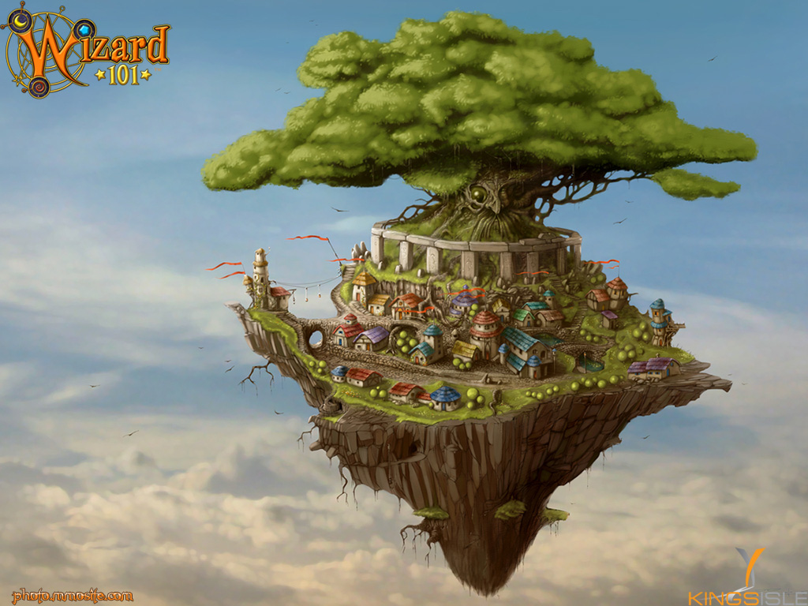
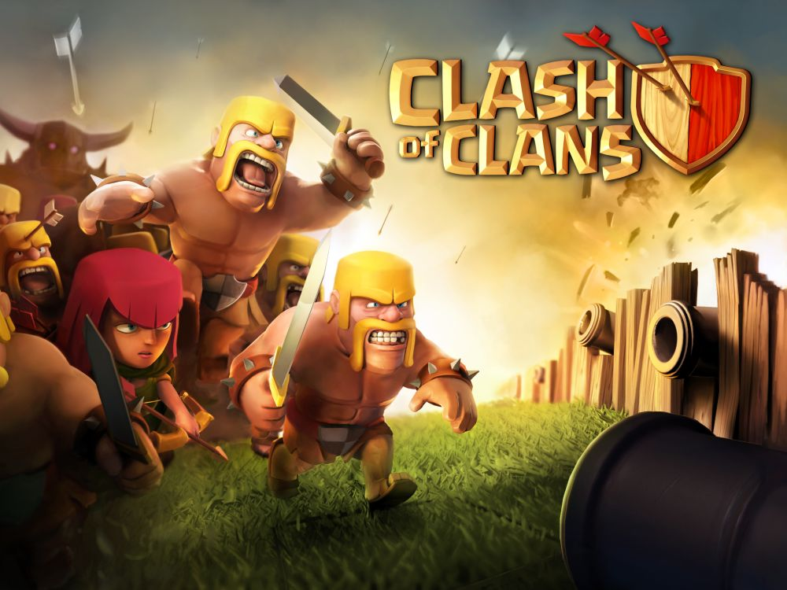

Understanding Your Tween's World:
Online Games
MUDs?
"Old-school" online gaming
MUDs?
- Primarily text-based
- D&D-like role playing
- Ages: If you can figure it out...
Animal Jam
Created by National Geographic Kids
Animal Jam
- Many different locations
- Mini games
- Animal videos
- Fun facts
- Ages 6 to 12
Poptropica
Created by Jeff Kinney, the author of the Diary of a Wimpy Kid series
Poptropica
- Many different "islands"
- Mini games
- Online chat
- Quests
- In-game purchases
- Ages 6 to 15
Fantage
Online community for children focused on safety
Fantage
- Customized cartoon avatars
- 16M+ registered players
- Three-tiered child safety system
- In-game purchases (eCoins)
- Ages 7 to 16
Wizard101
Online role-playing
Wizard101
- Character building & development
- Quests & team play
- Limited PvP
- Mild violence and combat
- Ages 8 to 16
Minecraft
The blockbuster, indie "sandbox" game
Minecraft
- Players mine for and build with resources
- Wildly popular with kids ages 8-14
- Single and multiplayer
- Very mild violence centered around survival
- Some servers allow PvP
- Ages 6+
Minecraft
- Darien Library hosts the Fairfield County Minecraft Server
- All players must have a valid library card from a participating library
- Staff monitored and moderated
- Focused on community
- Ages 6-17
Roblox
Vaguely similar to Minecraft but with more focus on "self", avatar-development, and combat
Roblox
- Lego-like landscape
- Integrates Lua programming language
- Players learn about computer programming, stocks, ratios, advertising, and marketing
- "Builders Club" is premium gameplay for a monthly charge
- In-game purchases
- Ages 8 to 18
Garry's Mod (Gmod)
"Sandobox" physics game available through Steam
Garry's Mod (Gmod)
- No game objective
- Players can use the game's set of tools for any purpose
- Environment is manipulated using a "Physics Gun" and a "Tool Gun"
- Introduced "ragdoll posing"
- Ages 10 to 18
Clash of Clans
Mobile, "freemium" strategy game, similar to Age of Empires
Clash of Clans
- Players build NPC communities
- Combat with other players
- Join "clans" for protection and conquest
- "Pay to advance" game
- Ages 10 to Adult
League of Legends
Multiplayer online battle arena
League of Legends

- Players are "matched" with other players of similar ranking
- Player "Champions" advance and level-up
- Moderation is conducted through a democratic system known as The Tribunal
- High-stakes tournaments
- Ages 12+
World of Warcraft

The world's most-subscribed MMORPG
World of Warcraft

- Subscription-based gameplay
- D&D-like role-playing
- Parental controls available
- Black market of virtual goods in the real world
- Ages 12+
Eve Online

Real-time, space-based strategy game
Eve Online
- Highly complex gameplay
- Players maintain characters, ships, and inventory
- Gameplay can focus on many different areas
- Black market of virtual goods in the real world
- Ages 14+
Call of Duty
Hyper-realistic first-person combat
Call of Duty
- Highly immersive combat environment
- Real-world weapons
- Controversial history
- Extremely violent
- Ages 15+